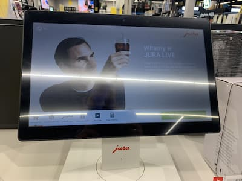
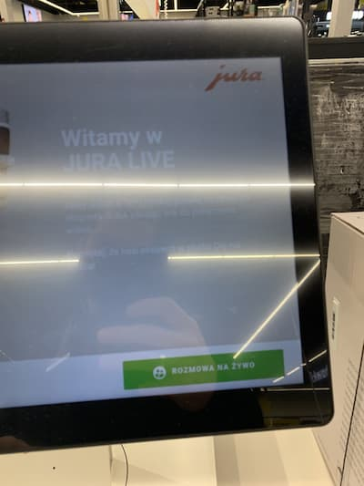

E-asystent / Wnioski:
- przyszłościowo może to być alternatywa dla sklepów premium,
- na ekspozytorach dodatkowo tablet z programem doboru urządzenia wg kryteriów klienta,
- wirtualny asystent ,pozwalałby na dobór sprzętu uwzględniając potrzeby klienta i politykę firmy,
- w dobie nowoczesnych technologii może stanowić atrakcję dla potencjalnych klientów,
- przy problemach w doborze możliwość kontaktu live z konsultantem,
Best practice konkurencja:

E-asystent Jura

E-asystent Jura